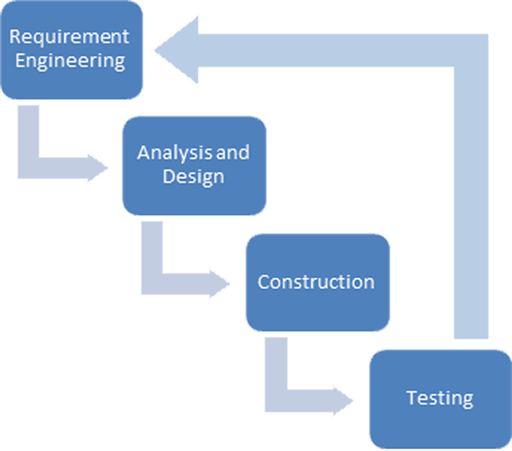

Browser tidak didukung
Maaf, browser yang anda gunakan tidak memiliki fitur-fitur yang dibutuhkan untuk menampilkan poster ini.
Gunakan browser Google Chrome, Mozilla Firefox, atau Safari versi terbaru untuk dapat menampilkan poster tanpa masalah
Pengembangan Perangkat Lunak
Berdasarkan Standar OBD-II
Alex Xandra Albert Sim
bertzzie@gmail.com
Benhard Sitohang
benhard@stei.itb.ac.id
Institut Teknologi Bandung
Magister Informatika
Latar Belakang
ECU (Engine Control Unit)
pada mobil digunakan untuk optimasi performa
ECU berdampak
Positif: Manufaktur, Pelanggan
Negatif: Bengkel
Optimasi performa selalu baik. Tapi ECU juga berarti informasi diagnosa harus diambil secara digital. Ini menyulitkan bengkel dalam reparasi tanpa bantuan manufaktur.
OBD (On Board Diagnostic) II
Standar yang diterbitkan Uni Eropa agar semua orang dapat mengembangkan perangkat lunak yang dapat membaca informasi diagnosa dari ECU.
Tujuan Tesis
Meneliti dan Mendokumentasikan
Cara Kerja ECU
arsitektur, fungsionalitas, dan komunikasi
Mengembangkan
Perangkat Lunak Diagnosa Mesin Mobil
sesuai Dengan Standar OBD-II
Penambahan Fitur ECU
Non-Standar OBD-II
(opsional)

Evaluasi Hasil
Perangkat Pengujian
OBD Simulator
ECU Mercedes Benz E320
ECU Chevrolet Aveo
karena adanya jeda antara pengiriman perintah pertama ke perintah berikutnya. Data, terutama pada modul grafik, menjadi tidak ditampilkan dengan akurat.
Arsitektur Sistem
Kesimpulan
Arsitektur ECU dan standar OBD-II yang sederhana
manufaktur, pengendara mobil, maupun bengkel
Pembacaan
OBD-II sulit dilakukan karena proteksi manufaktur.
Metode Pengembangan Perangkat Lunak
cocok untuk spesifikasi matang seperti OBD-II
Port Serial merupakan media komunikasi yang
untuk data real-time, karena jeda waktu antar perintah
Akses
Dokumen, kode, dan berbagai aset lain yang berhubungan dengan tesis ini dapat diakses pada: